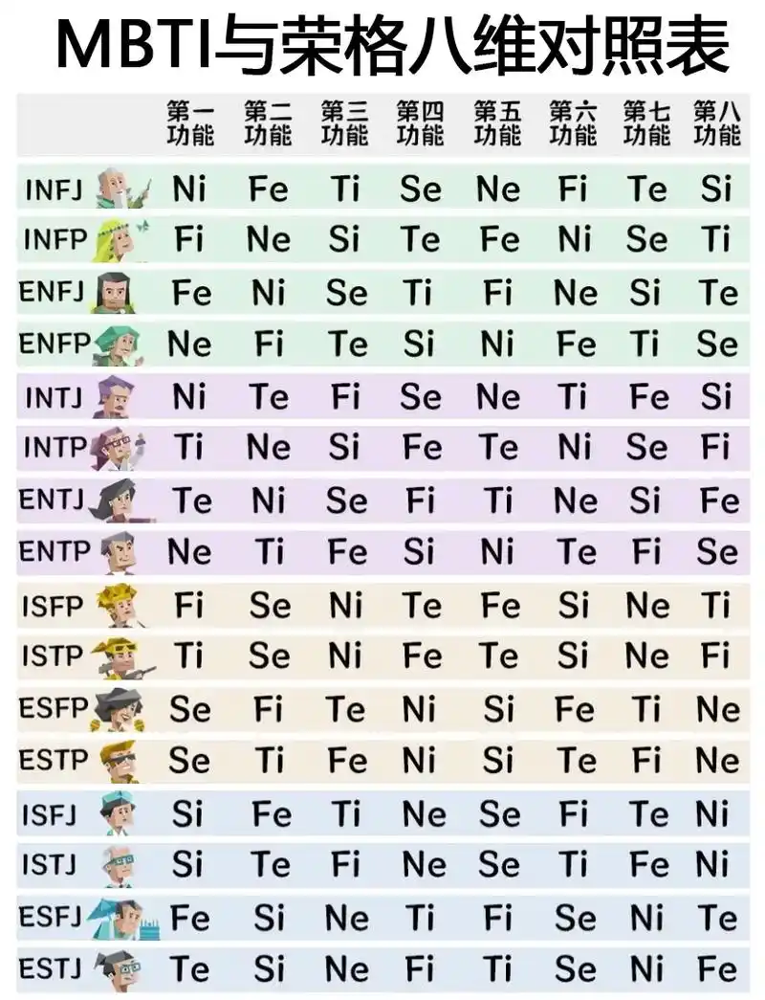

技能树 心理分析

我的心理分析技能-mbti及其背后的荣格八维理论
好的理论，没有围墙
mbti作为传播最广的心理学理论之一，虽然有其局限性，但仍然是一个很好的工具。它帮助我们更好地理解自己和他人，尤其是在团队合作和人际关系中。
我学习mbti的初衷是为了更好地理解自己和他人，尤其是在团队合作中。通过了解不同性格类型的特点，我们可以更有效地沟通和协作。
荣格八维
荣格八维理论是mbti的基础，它将人格分为八个维度：外向/内向、直觉/感觉、思考/情感、判断/知觉。每个人都在这八个维度上有不同的偏好，这些偏好决定了我们如何看待世界、处理信息和做出决策。
理解了荣格八维理论后，我们可以更深入地分析自己和他人的性格类型。例如，作为一个ENTP-A，我的外向直觉（Ne）使我善于发现新想法和可能性，而我的内向思考（Ti）则帮助我分析和优化这些想法。
"我喜欢：心理学。人与人沟通的翻译学"